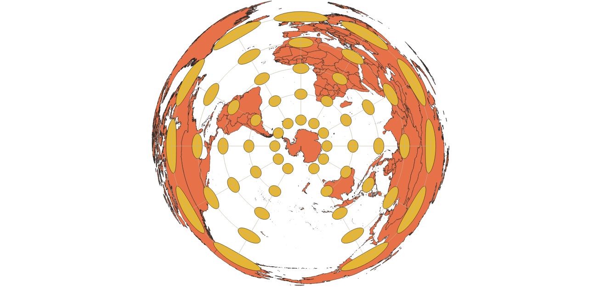

In this project I learned how to display images in different projections
Working with different projections for this assignment allowed me to become more familiar with the types of projections avalible and explore the uses of different geographic perspectives.
WGS84 Projection
It could be argued that this projection is the most commonly recognizable or used projection of the world map. It has a flat surface with increasing size distortion shown at the top and bottom of the map.

Aitoff Projection
Unlike the first projection, this projection is given curvature, representing the shaoe of the earth. Distortion is shown to follow the curvatures.

Pseudo Mercator
This projection elogigated the map on a flat surface and shows some size distortion on the top and bottom of the map.
Sphere Winkle
This projection considers the curvature of the earth.
World Cylindrical Equal Area
This projection is like a cylinder unrolled into a 2D rectangle, causing the most distortion to occur at the top and bottom of the map.

World Equidistant Conic
This projection shows the earth from an aerial perspective, respective to the North Pole.
North Pole Equidistant Azimuthal
This projection is also shown from an aerial perpectivel, relitive to the norh pole.
South Pole Equdistant Azimutal
This projection is also shown from an aerial perpectivel, but relitive to the south pole

Sphere Equdistant Azimutal
This projection is this most unique so far. It has distortion wrapping around the poles as the projection is an azimuthal of a sphere. The distortion lines almost look like a cartoon basketball.
Data used for this project
Download Natrual Earth 1:10m Cultural Vector